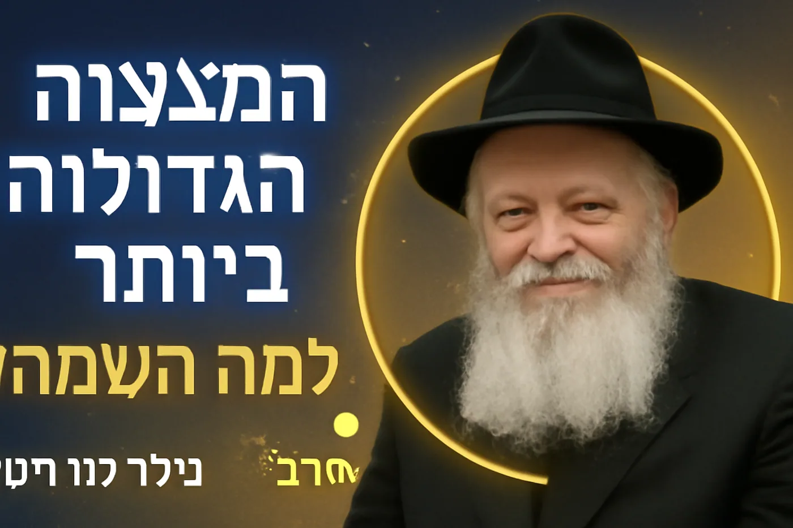
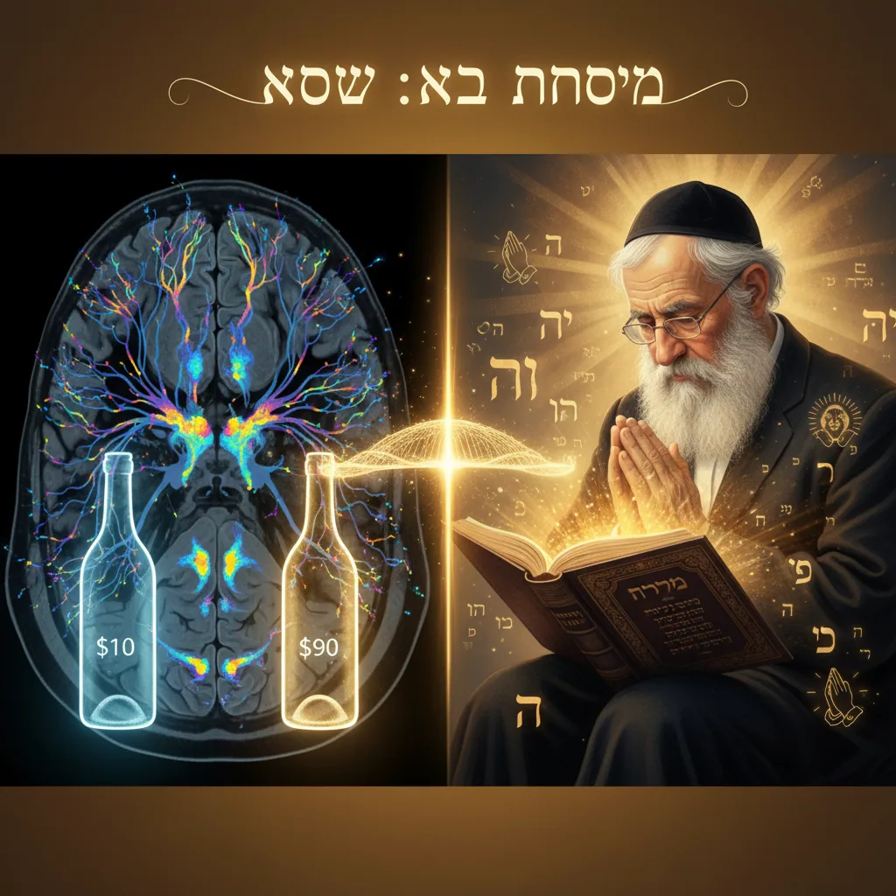
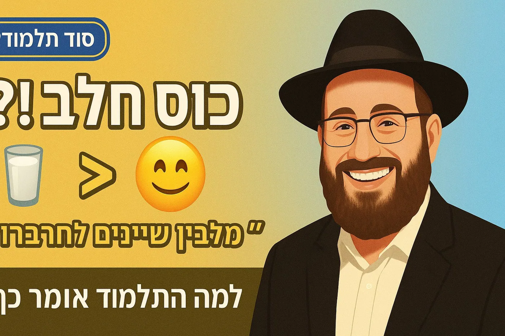
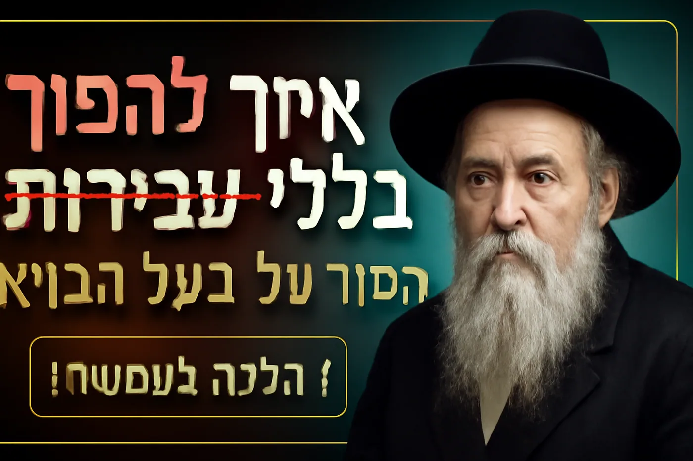
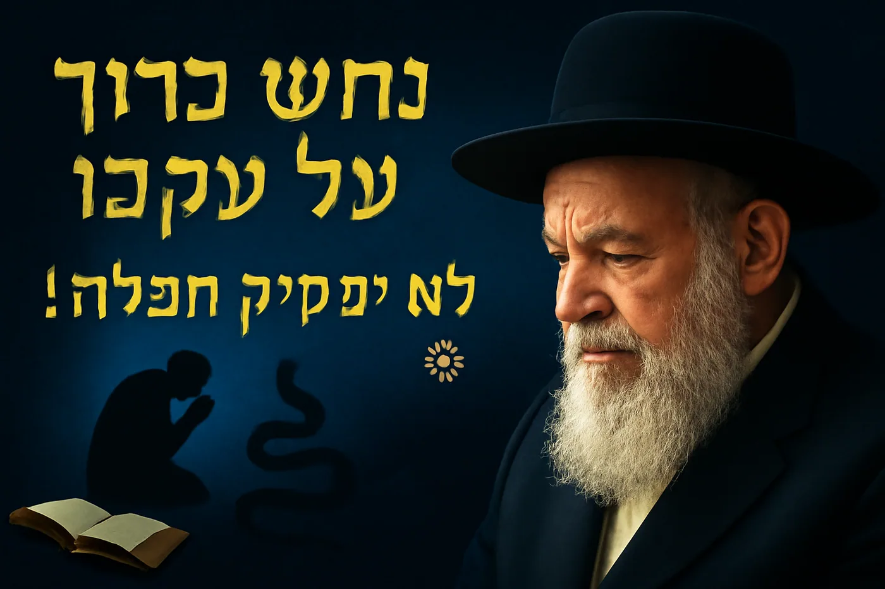

מאמרים ושיעורים
מאמרים תורניים, סיפורי צדיקים, חידושים ושיעורים
36 פריטים
שמחה ואושר במצוות (10)
המדע מאחורי המאור
הכימותרפיה של הנשמה

למה השמחה זו המצווה הגדולה ביותר? הרב טאוב חשף את הסוד
1. ⭐⭐⭐⭐⭐ "למה השמחה זו המצווה הגדולה ביותר? הרב טאוב חשף את הסוד" הסרטון מציג הסבר עמוק ומרגש של הרב יהודה ט…

השמחה - המצווה הנשכחת שמחזירה אותנו לחיים
🌟 האם ידעתם שבתורה השמחה היא לא רק רגש אלא מצווה ממשית? הרב יהודה טאוב חושף בשיעור מרתק איך השמחה מגדירה את …
ללמוד להנות מהחחיים
קורס עם מצגת - המדריך לזהות הנאה ולהגדילה לחצו כאן לראות את המצגת משחק למי יש? משחק למי יש שלב ב מהותו של י…

קשר בין מצוות לאושר
מאמרים תורנים חדשים מצוות והאושר בעולם הזה מצוות והאושר בעולם הזה 10 דרכים שבהן המצוות מביאות אושר בעולם הזה…

סוד השמחה במצוות - האושר הכול תלוי בראש
שיעור מרתק - האושר: הכל בראש? כוחה של הפרשנות מ-fMRI ועד הכוזרי האושר: הכל בראש? כוחה של הפרשנות מ-fMRI ועד …
אהבת ה' – האם בונים אותה באמצעות שמחה והודיה או שהיא צומחת מביטחון ואמונה?
אהבת ה' – האם בונים אותה באמצעות שמחה והודיה או שהיא צומחת מביטחון ואמונה? MP3 • 23473KB מהותו של יום ט"ו בא…

למה חיוך שווה יותר מאוכל? המימרא שתשנה לכם את החיים
ערוץ: הרב יהודה טאוב: לומדים לראות גאולה – כהכרת הטוב 1️⃣ ניתוח הסרטון הנוכחי נושא מרכזי: חיוך כמעשה חסד עלי…

איך 60 שניות בבוקר קובעות את כל היום - טיפים מעשיים
🎯 ערוץ: הרב יהודה טאוב: לומדים לראות גאולה – כהכרת הטוב 1️⃣ ניתוח הסרטון הנוכחי נושא מרכזי: הכוח של התחלה חי…
מאמרים תורניים (14)
מאמרים תורנים חדשים
קישורים לאתרי משחקי למידה שלי קרא עוד מחקר קול המורה: אמונה, נשימה, השפעה מקחרים מרתקים על שמירת הקול למורים ב…
מהותו של יום ט"ו באב
משנה: אמר רבן שמעון בן גמליאל: לא היו ימים טובים לישראל כחמשה עשר באב וכיום הכפורים, שבהן בנות ירושלים יוצאו…

מהפכה עולמית? הנבואה שמתגשמת מול עינינו!
✅ שם לסרטון (מקסימום 60 תווים)"מהפכה עולמית? הנבואה שמתגשמת מול עינינו!"## ⏱️ חותמות זמן:00:00 תקופה סוערת ב…
בית המקדש השלישי - מן השמיים או בידי אדם?
בית המקדש השלישי - מן השמיים או בידי אדם? דילמה עתיקת יומין בעלת השלכות מעשיות לדורנו פתיחה: שאלה שנוגעת להי…
למה בלי תורה אין עולם הבא? חידוש מזעזע מהגמרא על כל המצוות
## ניתוח הסרטון הנוכחי מדובר בדרשה עמוקה של הרב יהודה טאוב העוסקת בחשיבות לימוד התורה. הסרטון מביא שלושה מקו…

איך להפוך את העבירות שלכם לבלתי נראות לקדוש ברוך הוא
1. ⭐⭐⭐⭐⭐ "איך להפוך את העבירות שלכם לבלתי נראות לקדוש ברוך הוא" הוראות Thumbnail מדויקות מפרט טכני: גודל: 19…

למה הקדוש ברוך הוא מפיל אתכם דווקא כשאתם מתחילים להצליח?
1. ⭐⭐⭐⭐⭐ "למה הקדוש ברוך הוא מפיל אתכם דווקא כשאתם מתחילים להצליח?" ניתוח הסרטון הנוכחי הסרטון מציג סיכום מק…

למה כלב נקרא כלב? סודות השמות שהאדם הראשון קרא לבעלי החיים 2025
למה כלב נקרא כלב? הסודות המדהימים מאחורי שמות בעלי החיים האם תהיתם פעם למה דווקא כלב נקרא כלב? או מה הקשר בי…

איך התפללו באמצע מלחמה? הסוד של "נחש כרוך על עקבו
איך התפללו באמצע מלחמה? הסוד של "נחש כרוך על עקבו" "אפילו נחש כרוך על עקבו לא יפסיק" - זו אחת המשניות המפורס…

המצווה שכולם שוכחים: למה אין "פרשת מרים" כמו פרשת זכור?
יש ביהדות שש זכירות מהתורה - אבל אחת מהן כמעט נעלמה מהתודעה היהודית. התורה מצווה עלינו במפורש: "זכור את אשר …

למה בלק לא ביקש מבלעם לברך אותו? הסוד של ברכה אמיתית
למה בלק לא ביקש מבלעם לברך את מואב במקום לקלל את ישראל? מדוע דווקא ברכת כהנים נאמרת "באהבה"? הרב יהודה טאוב …
מדריך תיאולוגי, פסיכולוגי ומעשי לחיות את ההשגחה הפרטית
לראות את היד המכוונת: מדריך תיאולוגי, פסיכולוגי ומעשי לחיות את ההשגחה הפרטית מבוא: הצורך האנושי בחיבור והכוו…

מה עדיף אברך או מלמד?
לימוד עצמי מול לימוד לאחרים – מבט תורני, תרבותי ופסיכולוגי ניתן לקרוא כאן את המחקר עם המקורות א. נקודת המבט …
🎯 "האדם מחפש משמעות" - התפיסה היהודית על תכלית החיים
💎 ויקטור פרנקל והיהדות - חיבור מדהים: 🌟 מי היה ויקטור פרנקל: פסיכיאטר יהודי ששרד את השואה ויצר את "הלוגותרפי…
סיפורי צדיקים ואמונה (9)

סיפורי אמונה - מהחטופים מעזה
מחקר מקיף על סיפורי אמונה, חוסן רוחני ותופעות רוחניות בקרב חטופים ששוחררו מרצועת עזה לאחר 7 באוקטובר 2023 מב…

רבי חנינא - והדילמה הגדולה - המפהפך העצום בסיפור
📚 רציתי לראות כיצד הבינה המלאכותית תוכל לערוך סיפור פשוט 🤯✨ לא חלמתי על כאלו הפתעות מהדימות שמחכות לי 📖💎 הבא…

✨ המהר"ל שנולד בשכר כיבוד האב - סיפור על ברכת הדורות ✨
כתב בפלא יועץ ערך כיבוד אב ואם שהמכבד אביו ואמו שברו בעוה"ז שיהיו לו בנים מהוגנים ואף אם לא היה לו שכר אלא ז…

הסיפור על רבי יוסף משאש לחודש אלול - והתשובה
היֹה הָיָה פַּעַם יְהוּדִי וּשְׁמוֹ יְהוֹנָתָן, שֶׁבְּמֶשֶׁךְ זְמַן רַב מַעֲשָׂיו לֹא הָיוּ כָּל כָּךְ טוֹבִ…

הבלש היהודי - החכם - סיפורו של מר זוטרא
זוכרים את הגמרא חברותא מסכת בבא מציעא דף כד עמוד אמר זוטרא חסידא, אגניב ליה כסא דכספא מאושפיזא [נגנב ממנו כו…

שיר יהודים הם בני מלכים - מצגת
מצגת יפה על השיר מילות השיר בצורה יפה מאוד הורד קובץ DOCX • 8901KB מהותו של יום ט"ו באב חומר על חברת יישוב…

סיפורו של רבי עקיבא
לחצו כאן להיכנס למצגת - עם מילות השיר מצגת נוספת על הסיפור - לא מתאים לגמרי למילות השיר מהותו של יום ט"ו בא…

סיפורים על הרב עובדיה יוסף זצ"ל
לחצו כאן להיכנס לתוך המצגת סיפורים על מרן במצגת לילדים סיפורים על הרב עובדיה יוסף זצ"ל חלק א באריכות וכאן נ…

סיפור האמונה של אגם ברגר
דרך אמונה: 481 ימי החוסן הרוחני של אגם ברגר הקדמה: הלוח הלבן וההבטחה ביום ה-30 בינואר 2025, לאחר 481 ימים של ח…
חידושים ושונות (3)
חידושים שונים
תמונת ר' ישעיה מקרסטיר היא סגולה נגד עכברים אמר הרב דב קוק שליט"א: לתת טעם נוסף למה שנשתלשל בעולם לומר שתמונת …

משמעות האותיות
צורת האותיות ומשמעות לשון הקודש הרב מאיר שפריר משמעות האות א' והאות ב' - מתוך תורתו של סבינו ר' מאיר שפריר מבנ…
תמונת ר' ישעיה מקרסטיר היא סגולה נגד עכברים
אמר הרב דב קוק שליט"א: לתת טעם נוסף למה שנשתלשל בעולם לומר שתמונת ר' ישעיה הצדיק מסוגלת להבריח עכברים, [וראה ב…